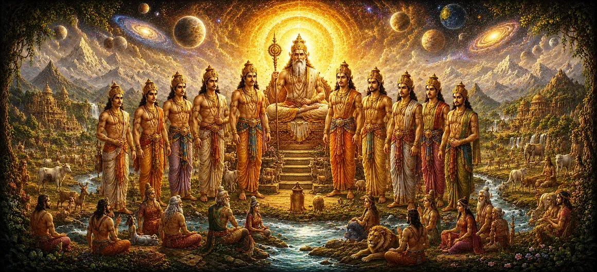

वैवस्वत मनु के नौ पुत्र और वंश
अध्याय 35 में वैवस्वत मनु की आयु और सामान्य वंशावली के व्यापक विवरण के बाद, उमा संहिता का छत्तीसवाँ अध्याय उनके नौ प्रतिष्ठित पुत्रों की ओर अपना विशेष ध्यान केंद्रित करता है। इसमें बताया गया है कि कैसे इन वंशजों ने प्रमुख शाही राजवंशों की स्थापना की जिन्होंने दुनिया के भू-राजनीतिक और आध्यात्मिक परिदृश्य को आकार दिया।
पाठ में प्रत्येक पुत्र के नाम, चरित्र और क्षेत्रीय विस्तार का वर्णन किया गया है, जिसमें दर्शाया गया है कि कैसे ब्रह्मांडीय सृजन लगातार समर्पित शासकों के माध्यम से प्रकट होता है जो धर्म और भगवान शिव की भक्ति को कायम रखते हैं।
इस वंशावली प्रदर्शनी के माध्यम से, साधकों को मानव इतिहास के परस्पर जुड़े जाल की याद दिलाई जाती है, जहां शाही कर्तव्य और आध्यात्मिक आकांक्षाएं दैवीय शासन के तहत सामंजस्यपूर्ण रूप से मिश्रित होती हैं।
अध्याय 36 की मुख्य बातें
नौ वंशज
वैवस्वत मनु से जन्मे नौ प्रतिष्ठित पुत्रों का परिचय।
प्रादेशिक विस्तार
वर्णन करता है कि कैसे राजकुमारों ने विभिन्न क्षेत्रों में राज्य स्थापित किए।
वंशवादी नींव
प्रमुख सौर और संबंधित शाही घरानों की प्रारंभिक जड़ों की रूपरेखा।
धर्म रक्षा
लौकिक कानून और धर्म को बनाए रखने के लिए शासकों के कर्तव्य पर जोर देता है।
वंशावली निरंतरता
मनु से आगे की पीढ़ियों के निर्बाध प्रवाह का पता लगाता है।
आध्यात्मिक विरासत
सांसारिक शासन को उच्च आध्यात्मिक जिम्मेदारियों से जोड़ता है।
इस अध्याय में मुख्य विषय
- 01 वैवस्वत मनु की संतान का प्रस्तावना →
- 02 नौ यशस्वी पुत्रों की गणना →
- 03 राजकुमार इक्ष्वाकु और अयोध्या की स्थापना →
- 04 विविध क्षेत्रीय राज्यों की स्थापना →
- 05 राजकुमारों का नैतिक और आध्यात्मिक चरित्र →
- 06 धर्मनिष्ठ शासन का विकास (क्षत्रिय धर्म) →
- 07 संतों और आध्यात्मिक गुरुओं के साथ गठबंधन →
- 08 ब्रह्मांडीय व्यवस्था बनाए रखने में राजाओं का कर्तव्य →
- 09 पैतृक विरासत और कर्तव्य पर विचार →
- 10 मनु वंश के और विस्तार की तैयारी →
वैवस्वत मनु की संतान का प्रस्तावना
अध्याय 36 वैवस्वत मनु के घराने की भव्यता को स्थापित करने के साथ शुरू होता है, जो वर्तमान युग के शासक वंशों के लिए स्रोत के रूप में कार्य करता था। उनके बुद्धिमान नेतृत्व में, पृथ्वी फली-फूली और दैवीय कानून के अनुरूप जनसंख्या का विस्तार हुआ।
पाठ बताता है कि महान आत्माओं के बीच प्रजनन केवल जैविक आवेग से प्रेरित नहीं होता है, बल्कि सत्य और धर्म के सक्षम रक्षकों के साथ दुनिया को आबाद करने के एक पवित्र कर्तव्य का प्रतिनिधित्व करता है।
इस प्रकार, मनु से जन्मे नौ पुत्र विशाल क्षेत्रों पर शासन करने के लिए आवश्यक असाधारण गुणों, ताकत और नेतृत्व गुणों से संपन्न थे।
नौ यशस्वी पुत्रों की गणना
शास्त्र नौ प्रसिद्ध राजकुमारों के नाम बताता है: इक्ष्वाकु, नाभाग, धृष्ट, शर्याति, नरिष्यंत, प्रम्शु, नाभरिष्ट, करुषा और पृथु। उनमें से प्रत्येक के पास प्रतिभाशाली बुद्धि और कर्तव्य के प्रति अटूट समर्पण था।
ये भाई दिव्य संतों के प्रत्यक्ष मार्गदर्शन में, शासन कला, आध्यात्मिक दर्शन और निर्दोषों की रक्षा करने की गहन कला सीखकर बड़े हुए।
परिपक्वता तक पहुंचने पर, उन्हें अपने पिता से आगे बढ़ने और पृथ्वी के विभिन्न हिस्सों में अपने स्वयं के संप्रभु डोमेन स्थापित करने का आशीर्वाद मिला।
राजकुमार इक्ष्वाकु और अयोध्या की स्थापना
भाइयों में इक्ष्वाकु सबसे बड़े और सबसे प्रसिद्ध हैं, जिन्होंने पवित्र शहर अयोध्या में अपनी राजधानी के साथ गौरवशाली सौर वंश (सूर्यवंश) की स्थापना की।
उनके वंश ने बाद में भगवान राम सहित महान सम्राटों को जन्म दिया, जिनका अनुकरणीय जीवन धार्मिक शासन और भक्ति का शाश्वत मानदंड बन गया।
पाठ में बताया गया है कि कैसे इक्ष्वाकु का प्रशासन सच्चाई, विषयों की सुरक्षा और आध्यात्मिक गुरुओं के प्रति गहरी श्रद्धा पर आधारित था।
विविध क्षेत्रीय राज्यों की स्थापना
अन्य पुत्रों - नाभाग, धृष्ट, शर्याति और बाकी - ने भी इसी तरह शक्तिशाली राज्यों की स्थापना की, नदियों, घाटियों और उपजाऊ मैदानों में संस्कृति, कृषि और सभ्यता का प्रसार किया।
प्रत्येक राजकुमार ने अपने शासन को अपनी प्रजा की अद्वितीय भौगोलिक और सांस्कृतिक आवश्यकताओं के अनुरूप बनाया, जिससे व्यापक शांति और समृद्धि सुनिश्चित हुई।
उनके सामूहिक प्रयासों से, पृथ्वी एक अदम्य जंगल से आध्यात्मिक और नैतिक साम्राज्यों के एक संरचित नेटवर्क में बदल गई।
राजकुमारों का नैतिक और आध्यात्मिक चरित्र
अध्याय 36 इस बात पर प्रकाश डालता है कि ये शाही वंशज लालच या विजय से प्रेरित सामान्य राजा नहीं थे; वे राजनीतिक सत्ता को ईश्वर द्वारा प्रदत्त एक पवित्र विश्वास के रूप में देखते थे।
उन्होंने कठोर आत्म-अनुशासन का अभ्यास किया, पवित्र संतों को संरक्षण दिया, पवित्र बलिदान दिए और यह सुनिश्चित किया कि कमजोरों को अन्याय से बचाया जाए।
उनकी आंतरिक पवित्रता और भगवान शिव के प्रति भक्ति ने यह सुनिश्चित किया कि उनके राज्यों को दैवीय कृपा और प्राकृतिक आपदाओं से मुक्ति मिले।
धर्मनिष्ठ शासन का विकास (क्षत्रिय धर्म)
पाठ में चर्चा की गई है कि कैसे इन शाही घरानों के विस्तार ने क्षत्रिय धर्म के लिए संस्थागत आधार तैयार किया - शासकों के लिए सम्मान, सुरक्षा और वीरता का कोड।
शिक्षाओं के अनुसार, एक सच्चा राजा न केवल भौतिक हथियारों से, बल्कि नैतिक अखंडता बनाए रखने और आध्यात्मिक मूल्यों को कायम रखकर प्रजा की रक्षा करता है।
इस महान मानक ने समाज को अराजकता में जाने से रोका और एक ऐसे वातावरण को बढ़ावा दिया जहां आध्यात्मिक साधक बिना किसी डर के ध्यान कर सकें।
संतों और आध्यात्मिक गुरुओं के साथ गठबंधन
पुराण में एक आवर्ती विषय लौकिक शासकों और आध्यात्मिक संतों के बीच घनिष्ठ सहयोग है। मनु के पुत्रों ने सलाह के लिए प्रबुद्ध ऋषियों का स्वागत करते हुए खुली अदालतें रखीं।
इस गठबंधन ने यह सुनिश्चित किया कि राजनीतिक निर्णय अस्थायी राजनीतिक सुविधा या स्वार्थी महत्वाकांक्षा के बजाय उच्च ज्ञान द्वारा निर्देशित हों।
इसने सभी राज्यों में भौतिक समृद्धि (अर्थ) और आध्यात्मिक मुक्ति (मोक्ष) के बीच सामंजस्यपूर्ण तालमेल बनाया।
ब्रह्मांडीय व्यवस्था बनाए रखने में राजाओं का कर्तव्य
अध्याय 36 दोहराता है कि एक राजा अपनी प्रजा के अच्छे या बुरे कर्मों में इस आधार पर भाग लेता है कि वह कितना न्यायपूर्वक शासन करता है। इसलिए निर्दोषों की रक्षा करना सर्वोच्च पूजा के रूप में देखा जाता है।
अपराध को खत्म करके, आध्यात्मिक परंपराओं का सम्मान करके और दान को प्रोत्साहित करके, मनु के पुत्रों ने अपने क्षेत्रों को भगवान शिव द्वारा पर्यवेक्षण की गई ब्रह्मांडीय लय के साथ जोड़ा रखा।
इस संरेखण से जनता को भरपूर बारिश, उपजाऊ फसल और आंतरिक संतुष्टि मिली।
पैतृक विरासत और कर्तव्य पर विचार
यह कथा आध्यात्मिक योग्यता के स्थायित्व के विपरीत नश्वर साम्राज्यों की क्षणभंगुरता को दर्शाती है। साम्राज्यों का उदय और पतन होता है, लेकिन धर्मी कार्यों की सुगंध युगों-युगों तक बनी रहती है।
साधकों को अपने जीवन को एक पवित्र वंश की निरंतरता के रूप में देखने के लिए प्रोत्साहित किया जाता है, जहां प्रत्येक सचेत विकल्प मानवता के सामूहिक उत्थान में योगदान देता है।
धार्मिक जीवन के माध्यम से पूर्वजों का सम्मान करना पारिवारिक और आध्यात्मिक सम्मान के सबसे सच्चे रूप के रूप में प्रस्तुत किया जाता है।
मनु वंश के और विस्तार की तैयारी
जैसे ही अध्याय 36 नौ पुत्रों और उनके प्राथमिक डोमेन के बारे में अपना विवरण समाप्त करता है, यह अध्याय 37 में विस्तारित शाखाओं और बाद की पीढ़ियों की गहन खोज के लिए मंच तैयार करता है।
यह पाठ प्रारंभिक शाही नींव को राजवंशों के विशाल वृक्ष के साथ जोड़ता है जो अंततः पृथ्वी के सभी कोनों को आबाद करेगा।
पाठक इस बात की गहराई से सराहना करते हैं कि किस प्रकार दैवीय विधान हर युग में धर्म को बनाए रखने के लिए इतिहास को व्यवस्थित करता है।
अध्याय 36 की प्रमुख शिक्षाएँ
कुलीन संतान
वैवस्वत मनु के नौ पुत्रों ने विश्व सभ्यता की नींव रखी।
विश्वास के रूप में शक्ति
राजनीतिक सत्ता निर्दोषों की रक्षा करना और धर्म को कायम रखना एक पवित्र जिम्मेदारी है।
साधु मार्गदर्शन
सच्चे शासक सामंजस्यपूर्ण शासन के लिए आध्यात्मिक गुरुओं के ज्ञान पर भरोसा करते हैं।
क्षत्रिय धर्म
सम्मान और सुरक्षा की संहिता धर्मी समाज की रीढ़ बनती है।
सांस्कृतिक विस्तार
राजकुमारों ने विभिन्न क्षेत्रों में सभ्यता, कृषि और आध्यात्मिक मूल्यों का प्रसार किया।
ईश्वरीय कृपा
भगवान शिव की भक्ति और धर्म शाश्वत समृद्धि सुनिश्चित करती है।
आध्यात्मिक चिंतन
अध्याय 36 इतिहास का एक शानदार चित्रमाला प्रस्तुत करता है, जिसमें दैवीय उद्देश्य के लेंस के माध्यम से मानव साम्राज्यों के विस्तार को देखा गया है। वैवस्वत मनु के नौ पुत्र केवल क्षेत्र के विजेता नहीं थे, बल्कि ब्रह्मांडीय व्यवस्था के प्रबंधक थे। धर्म के प्रति उनकी प्रतिबद्धता, आध्यात्मिक संतों के साथ सद्भाव और अपनी प्रजा की रक्षा के प्रति समर्पण दर्शाता है कि सच्चा नेतृत्व आध्यात्मिक अखंडता में निहित है। जैसे ही हम इन प्राचीन वंशावली पर विचार करते हैं, हमें याद आता है कि हमारा अपना जीवन एक भव्य सातत्य का हिस्सा है। अपने दैनिक कार्यों को सत्य, करुणा और भगवान शिव के प्रति भक्ति के साथ जोड़कर, हम अपनी विरासत का सम्मान करते हैं और दुनिया के आध्यात्मिक उत्थान में योगदान देते हैं।
अध्याय 36 का संदेश जीना
अपनी दैनिक जिम्मेदारियों को परमात्मा द्वारा आपको सौंपे गए पवित्र कर्तव्यों के रूप में देखते हुए अध्याय 36 के पाठों को लागू करें। चाहे परिवार में हों, काम पर हों या समुदाय में हों, उन लोगों के प्रति सम्मान, निष्पक्षता और सुरक्षा के साथ काम करें जो आप पर निर्भर हैं।
कठिन निर्णयों का सामना करते समय बुद्धिमान, आध्यात्मिक गुरुओं से सलाह लें, यह सुनिश्चित करें कि आपके कार्य अहंकार के बजाय उच्च सिद्धांतों द्वारा निर्देशित हों।
ऐसी निष्ठा के साथ जीना सामान्य जीवन को एक महान भेंट में बदल देता है, जो मनु के प्राचीन वंशजों की धार्मिक भावना को प्रतिध्वनित करता है।
प्रमुख आध्यात्मिक अवधारणाएँ
वर्तमान मन्वंतर के शासक पूर्वज और शाही वंश के पितामह।
अयोध्या में राजकुमार इक्ष्वाकु द्वारा स्थापित गौरवशाली सौर वंश।
शासकों के लिए सम्मान, सुरक्षा और न्यायसंगत शासन की पवित्र संहिता।
शाही संत जिन्होंने लौकिक प्रशासन को उच्च आध्यात्मिक अनुभूति के साथ जोड़ा।
समाज में नैतिक और लौकिक कानून की सक्रिय सुरक्षा और कायम रहना।
पवित्र अखंड वंशावली और वंशावली विरासत पीढ़ियों से चली आ रही थी।
अध्याय सारांश
उमा संहिता अध्याय 36 में वैवस्वत मनु के नौ प्रतिष्ठित पुत्रों- इक्ष्वाकु, नाभाग, धृष्ट, शर्याति, नरिष्यंत, प्रम्शु, नाभरिष्ट, करुषा और पृथु का विवरण दिया गया है। इसमें वर्णन किया गया है कि कैसे इन राजकुमारों ने पृथ्वी भर में संप्रभु साम्राज्यों की स्थापना की, इक्ष्वाकु ने अयोध्या में प्रसिद्ध सौर राजवंश की स्थापना की। कथा में राजकुमारों के नैतिक चरित्र, आध्यात्मिक संतों के साथ उनके गठबंधन और क्षत्रिय धर्म और लौकिक न्याय के प्रति उनके समर्पण पर प्रकाश डाला गया है। राजनीतिक शासन को एक पवित्र ट्रस्ट के रूप में परिभाषित करके, अध्याय दर्शाता है कि कैसे भौतिक समृद्धि और आध्यात्मिक मूल्य दैवीय कानून के तहत सामंजस्यपूर्ण रूप से जुड़े रहते हैं, जो अध्याय 37 में व्यापक वंशावली विस्तार के लिए मंच तैयार करता है।
अक्सर पूछे जाने वाले प्रश्न
① उमा संहिता अध्याय 36 का प्राथमिक विषय क्या है?
प्राथमिक विषय में वैवस्वत मनु के नौ पुत्रों की गणना और उनके संबंधित शाही राजवंशों के व्यापक विकास को शामिल किया गया है।
② शिव पुराण के संदर्भ में वैवस्वत मनु कौन हैं?
वैवस्वत मनु वर्तमान मन्वंतर के शासक पूर्वज हैं, जो संस्थापक कुलपिता के रूप में सेवारत हैं, जिनसे प्रमुख सौर और चंद्र राजवंशों का अवतरण हुआ।
③ मनु की वंशावली शास्त्रों में महत्वपूर्ण क्यों हैं?
वे मानव जाति की ऐतिहासिक और आध्यात्मिक निरंतरता का पता लगाते हैं, यह दर्शाते हुए कि कैसे महान राजाओं के माध्यम से पीढ़ी दर पीढ़ी दैवीय व्यवस्था और धर्म का प्रचार किया गया।
④ अध्याय 36 अध्याय 35 पर कैसे आधारित है?
अध्याय 35 वैवस्वत मनु की समग्र आयु और सामान्य वंश का परिचय देता है, जबकि अध्याय 36 उनके नौ पुत्रों और उनकी व्यक्तिगत संतानों से संबंधित विवरण निर्दिष्ट करता है।
⑤ पैतृक वंशावली के अध्ययन से क्या आध्यात्मिक शिक्षा मिलती है?
वंशावली का अध्ययन साधकों को सांसारिक साम्राज्यों की नश्वरता और दैवीय कानून के अनुरूप अपने धार्मिक कर्तव्यों को पूरा करने के महत्व की याद दिलाता है।
⑥ अध्याय 36 अध्याय 37 से कैसे जुड़ता है?
अध्याय 36 में नौ पुत्रों और उनके प्रत्यक्ष वंश की रूपरेखा दी गई है, जबकि अध्याय 37 इस अध्ययन को मनु वंश की बाद की शाखाओं तक विस्तारित करता है।
"धर्मी नेतृत्व और भगवान शिव की भक्ति के माध्यम से, नश्वर शासक सांसारिक साम्राज्यों को दैवीय व्यवस्था के प्रतिबिंबों में बदल देते हैं।"
उमा संहिता के माध्यम से जारी रखें
अध्याय 36 में वैवस्वत मनु के नौ पुत्रों और मूल वंशावली का विवरण दिया गया है। इन शाही नींवों की स्थापना के साथ, मनु वंश की आगे की शाखाओं और निरंतरता का पता लगाने के लिए अध्याय 37 में आगे बढ़ें।